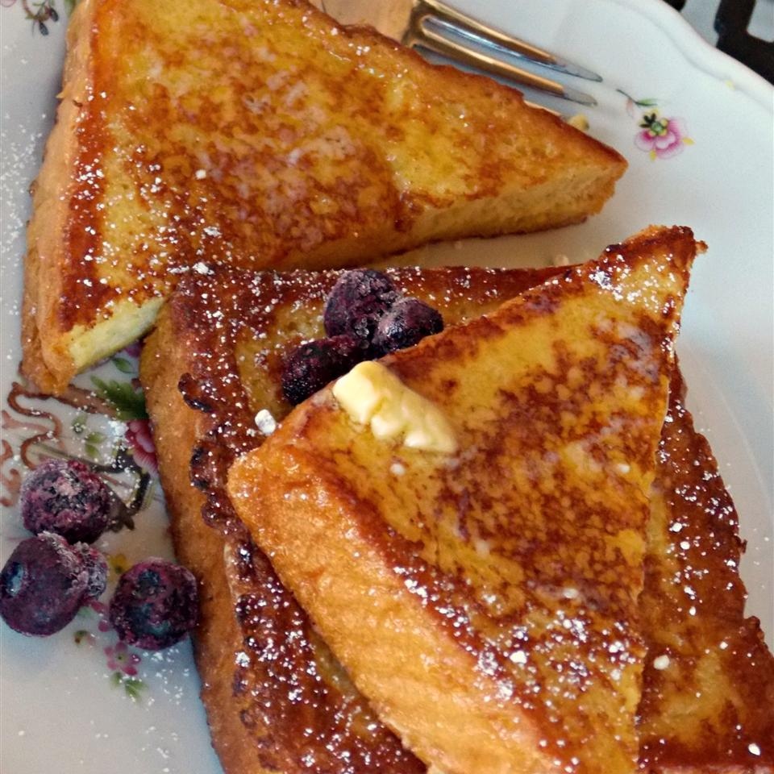

Vanilla-Almond Spiced French Toast

Description
A dish usually served for breakfast in which bread is dipped into eggs and
seasonings and then fried to a golden brown. French toast is often topped with
butter, preserves, or syrup. It is often used as a method to use up French
bread that is a day or two old and has started to dry out.
Ingredients
- 2 cups whole milk
- 2 tablespoons brown sugar
- 4 large eggs
-
1 teaspoon double-strength imitation vanilla extract (such as Goodman's
Route 66)
-
1/2 teaspoon almond extract (such as Watkins® pure
almond extract)
- 1/2 teaspoon ground cinnamon
- 1/4 teaspoon ground nutmeg
- 1/8 teaspoon ground allspice
- 8 thick slices slightly stale Texas toast
steps
- Mix whole milk and brown sugar in a large bowl.
-
Beat eggs, vanilla extract, almond extract, cinnamon, nutmeg, and allspice
together in a separate bowl until the eggs are well beaten; add to the milk
mixture and stir to dissolve the brown sugar.
- Heat a non-stick skillet or griddle over medium-low heat.
-
Set one slice of Texas toast into the milk mixture; let soak until
moistened, about 10 seconds per side.
-
Cook the dipped toast in the preheated skillet until bottom is golden brown,
3 to 5 minutes; flip toast and continue to cook until the other side is
browned, 3 to 5 minutes more. Repeat dipping and cooking with remaining
bread slices.